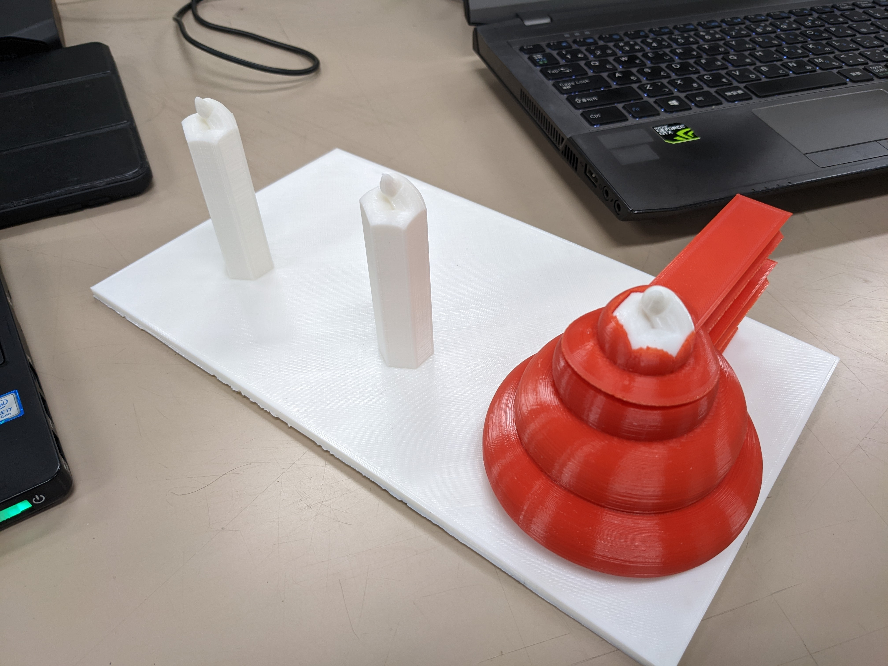
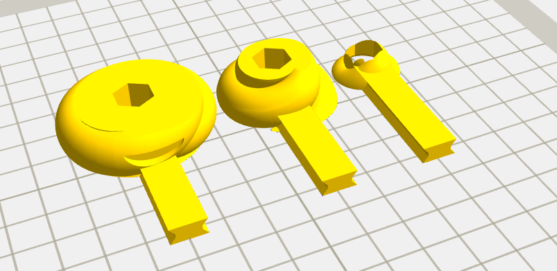
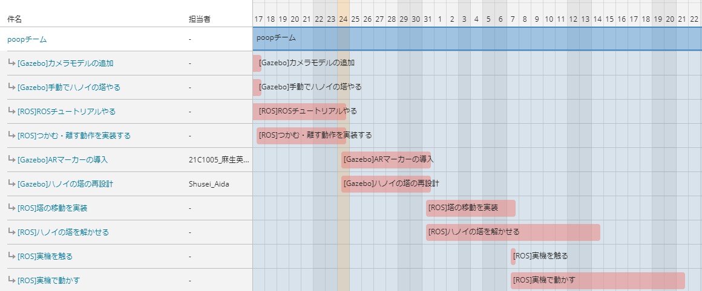

設計製作論3 中間報告
poop班
2022/10/24
麻生英寿 相田舟星
目次
- チームの目標
- 進捗
- ハノイの塔完成
- Worldファイル完成
- Gazeboでコントローラー操作
- これからの予定
- ハノイの塔の構造を見直す
- ARマーカーの導入
- スケジュール
チームの目標
ハノイの塔をロボットアームで解く
ただのハノイの塔じゃ面白くないので…
見た目をう〇こにします
進捗
- ハノイの塔完成
- Worldファイル完成
- Gazeboでコントローラー操作
ハノイの塔完成
3Dプリンターで出力しました

Worldファイル完成
アームとハノイの塔があるWorldファイルが完成

Gazeboでコントローラー操作
crane_x7_examples内のjoystick_exampleを利用して操作
- 操作はできたが、動かすところが多くてやりにくい
- なぜか反応が鈍い
自由度を落としたほうがいいかも
これからの予定
- ハノイの塔の構造を見直す(~10/31)
- ARマーカーの導入(~10/31)
- ハノイの塔を解いてみる(~11/14)
- 実機で動かす(~中間発表)
ハノイの塔の構造を見直す(~10/31)
Gazeboは物体同士で突き刺さる状態が苦手
う〇こが飛び散ってしまう
→位置を指定して積み重ねるようにする
ARマーカーの導入(~10/31)
ARマーカーによって置き場所を指定する
- マーカーからの距離や傾きが取得できる
- 置き場所をマーカーを動かすことで変えられる
- Gazebo上でシミュレーションできる
ハノイの塔を解いてみる(~11/14)
- シミュレーション環境を構築した
- コントローラで動かせた
- ROSチュートリアル(noetic)を一通りやった
プログラムの展望が見えてきた…?
10月末からプログラムやる
実機で動かす(~中間発表)
例年の発表や先輩の話を聞くと…
シミュレーションと現実で挙動が違う
…なので早め(11月第一週)に実機に触っておく
スケジュール
